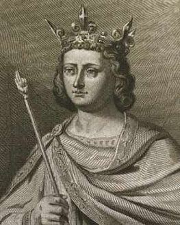
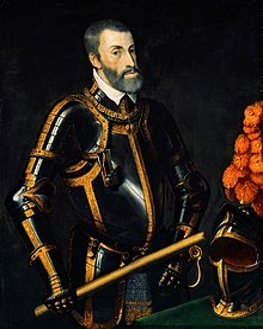
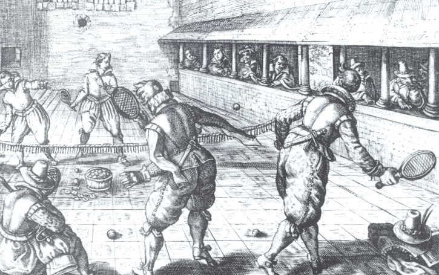
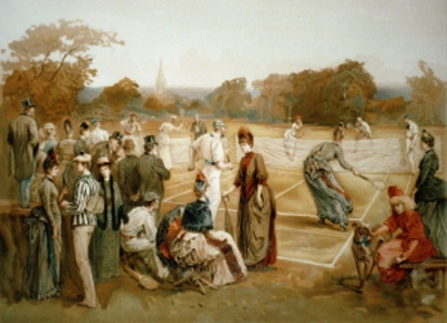
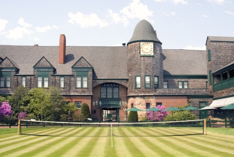

Historians believe that the game's ancient origin lay in 12th century northern France, where a ball was struck with the palm of the hand. Louis X of France was a keen player of jeu de paume ("game of the palm"), which evolved into real tennis, and became notable as the first person to construct indoor tennis courts in the modern style. Louis was unhappy with playing tennis outdoors and accordingly had indoor, enclosed courts made in Paris "around the end of the 13th century". In due course this design spread across royal palaces all over Europe. In June 1316 at Vincennes, Val-de-Marne and following a particularly exhausting game, Louis drank a large quantity of cooled wine and subsequently died of either pneumonia or pleurisy, although there was also suspicion of poisoning. Because of the contemporary accounts of his death, Louis X is history's first tennis player known by name. Another of the early enthusiasts of the game was King Charles V of France, who had a court set up at the Louvre Palace.
 It wasn't until the 16th century that rackets came into use, and the game began to be called "tennis", from the French term tenez, which can be translated as "hold!", "receive!" or "take!", an interjection used as a call from the server to his opponent. It was popular in England and France, although the game was only played indoors where the ball could be hit off the wall. Henry VIII of England was a big fan of this game, which is now known as real tennis. During the 18th and early 19th centuries, as real tennis declined, new racket sports emerged in England.
Jeu de paume in the 17th century
Further, the patenting of the first lawn mower in 1830, in Britain, is strongly believed to have been the catalyst, worldwide, for the preparation of modern-style grass courts, sporting ovals, playing fields, pitches, greens, etc. This in turn led to the codification of modern rules for many sports, including lawn tennis, most football codes, lawn bowls and others.
Between 1859 and 1865 Harry Gem, a solicitor and his friend Augurio Perera developed a game that combined elements of racquets and the Basque ball game pelota, which they played on Perera's croquet lawn in Birmingham, England, United Kingdom. In 1872, along with two local doctors, they founded the world's first tennis club on Avenue Road, Leamington Spa. This is where "lawn tennis" is used as a name of activity by a club for the first time. After Leamington, the second club to take up the game of lawn tennis appears to have been the Edgbaston Archery and Croquet Society, also in Birmingham.
In Tennis: A Cultural History, Heiner Gillmeister reveals that on December 8, 1874, British army officer Walter Clopton Wingfield wrote to Harry Gem, commenting that he (Wingfield) had been experimenting with his version of lawn tennis “for a year and a half”. In December 1873, Wingfield designed and patented a game which he called sphairistikè (Greek: σφαιριστική, meaning "ball-playing"), and was soon known simply as "sticky" – for the amusement of guests at a garden party on his friend's estate of Nantclwyd Hall, in Llanelidan, Wales.According to R. D. C. Evans, turfgrass agronomist, "Sports historians all agree that [Wingfield] deserves much of the credit for the development of modern tennis." According to Honor Godfrey, museum curator at Wimbledon, Wingfield "popularized this game enormously. He produced a boxed set which included a net, poles, rackets, balls for playing the game – and most importantly you had his rules. He was absolutely terrific at marketing and he sent his game all over the world. He had very good connections with the clergy, the law profession, and the aristocracy and he sent thousands of sets out in the first year or so, in 1874." The world's oldest annual tennis tournament took place at Leamington Lawn Tennis Club in Birmingham in 1874. This was three years before the All England Lawn Tennis and Croquet Club would hold its first championships at Wimbledon, in 1877. The first Championships culminated a significant debate on how to standardize the rules.
In the U.S. in 1874 Mary Ewing Outerbridge, a young socialite, returned from Bermuda with a sphairistikè set. She became fascinated by the game of tennis after watching British army officers play. She laid out a tennis court at the Staten Island Cricket Club at Camp Washington, Tompkinsville, Staten Island, New York. The first American National championship was played there in September 1880. An Englishman named O.E. Woodhouse won the singles title, and a silver cup worth $100, by defeating Canadian I. F. Hellmuth. There was also a doubles match which was won by a local pair. There were different rules at each club. The ball in Boston was larger than the one normally used in New York.
On 21 May 1881, the oldest nationwide tennis organization in the world was formed, the United States National Lawn Tennis Association (now the United States Tennis Association) in order to standardize the rules and organize competitions. The U.S. National Men's Singles Championship, now the US Open, was first held in 1881 at the Newport Casino, Newport, Rhode Island. The U.S. National Women's Singles Championships were first held in 1887 in Philadelphia.
Lawn tennis in the U.S., 1887
Tennis also became popular in France, where the French Championships dates to 1891 although until 1925 it was open only to tennis players who were members of French clubs. Thus, Wimbledon, the US Open, the French Open, and the Australian Open (dating to 1905) became and have remained the most prestigious events in tennis. Together these four events are called the Majors or Slams (a term borrowed from bridge rather than baseball).
In 1913, the International Lawn Tennis Federation (ILTF), now the International Tennis Federation (ITF), was founded and established three official tournaments as the major championships of the day. The World Grass Court Championships were awarded to Great Britain. The World Hard Court Championships were awarded to France; the term "hard court" was used for clay courts at the time. Some tournaments were held in Belgium instead. And the World Covered Court Championships for indoor courts was awarded annually; Sweden, France, Great Britain, Denmark, Switzerland and Spain each hosted the tournament. At a meeting held on 16 March 1923 in Paris, the title 'World Championship' was dropped and a new category of Official Championship was created for events in Great Britain, France, the United States, and Australia – today’s Grand Slam events. The impact on the four recipient nations to replace the ‘world championships’ with ‘official championships’ was simple in a general sense: each became a major nation of the federation with enhanced voting power and each now operated a major event.
The comprehensive rules promulgated in 1924 by the ILTF, have remained largely stable in the ensuing eighty years, the one major change being the addition of the tiebreak system designed by Jimmy Van Alen. That same year, tennis withdrew from the Olympics after the 1924 Games but returned 60 years later as a 21-and-under demonstration event in 1984. This reinstatement was credited by the efforts by the then ITF President Philippe Chatrier, ITF General Secretary David Gray and ITF Vice President Pablo Llorens, and support from IOC President Juan Antonio Samaranch. The success of the event was overwhelming and the IOC decided to reintroduce tennis as a full medal sport at Seoul in 1988.
The Davis Cup, an annual competition between men's national teams, dates to 1900. The analogous competition for women's national teams, the Fed Cup, was founded as the Federation Cup in 1963 to celebrate the 50th anniversary of the founding of the ITF.
In 1926, promoter C. C. Pyle established the first professional tennis tour with a group of American and French tennis players playing exhibition matches to paying audiences. The most notable of these early professionals were the American Vinnie Richards and the Frenchwoman Suzanne Lenglen. Once a player turned pro he or she was no longer permitted to compete in the major (amateur) tournaments.
In 1968, commercial pressures and rumors of some amateurs taking money under the table led to the abandonment of this distinction, inaugurating the Open Era, in which all players could compete in all tournaments, and top players were able to make their living from tennis. With the beginning of the Open Era, the establishment of an international professional tennis circuit, and revenues from the sale of television rights, tennis's popularity has spread worldwide, and the sport has shed its middle-class English-speaking image (although it is acknowledged that this stereotype still exists).
In 1954, Van Alen founded the International Tennis Hall of Fame, a non-profit museum in Newport, Rhode Island. The building contains a large collection of tennis memorabilia as well as a hall of fame honouring prominent members and tennis players from all over the world. Each year, a grass court tournament and an induction ceremony honoring new Hall of Fame members are hosted on its grounds.
International Tennis Hall of Fame